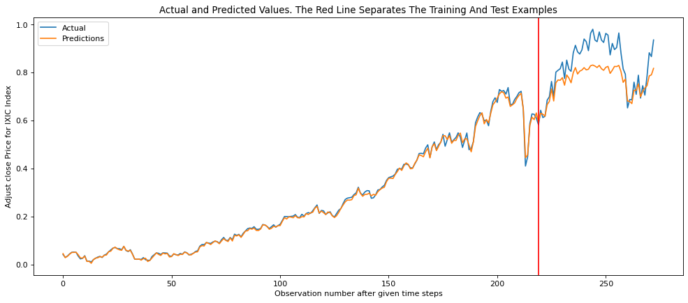

## Step 5: Compute And Print The Root Mean Square Error## use the function: print_error()def print_error(trainY, testY, train_predict, test_predict):# Error of predictions train_rmse = math.sqrt(mean_squared_error(trainY, train_predict)) test_rmse = math.sqrt(mean_squared_error(testY, test_predict))# Print RMSEprint('Train RMSE: %.3f RMSE'% (train_rmse))print('Test RMSE: %.3f RMSE'% (test_rmse))
Show the code
# make predictionstrain_predict = model.predict(trainX)test_predict = model.predict(testX)# Mean square error of Training dataset and Testing dataset:print_error(trainY, testY, train_predict, test_predict)
## Step 6: View The result# Plot the resultdef plot_result(trainY, testY, train_predict, test_predict): ## define the content of the plot actual = np.append(trainY, testY) predictions = np.append(train_predict, test_predict) rows =len(actual) plt.figure(figsize=(15, 6), dpi=80) plt.plot(range(rows), actual) plt.plot(range(rows), predictions) plt.axvline(x=len(trainY), color='r') plt.legend(['Actual', 'Predictions']) plt.xlabel('Observation number after given time steps') plt.ylabel('Adjust close Price for IXIC Index') plt.title('Actual and Predicted Values. The Red Line Separates The Training And Test Examples')plot_result(trainY, testY, train_predict, test_predict)plt.show() ## show the plot

Show the code
data=pd.read_csv('data/azn.csv')data.head()
Date
AZN.Open
AZN.High
AZN.Low
AZN.Close
AZN.Volume
AZN.Adjusted
0
04/01/2010
23.709999
23.764999
23.575001
23.705000
2606200.0
13.440908
1
05/01/2010
23.434999
23.465000
23.150000
23.225000
2666600.0
13.168744
2
06/01/2010
22.915001
23.045000
22.785000
23.040001
3020800.0
13.063849
3
07/01/2010
23.250000
23.325001
23.120001
23.290001
4454600.0
13.205604
4
08/01/2010
23.270000
23.415001
23.174999
23.389999
2675600.0
13.262300
Show the code
## set training and testing datasetglobal lag #forcast time laglag=12nrow=data.shape[0]train_index=list(range(int(0.7*(nrow-lag))))validation_index=list(range(int(0.7*(nrow-lag)),int(0.9*(nrow-lag))))test_index=list(range(int(0.9*(nrow-lag)),(nrow-lag)))def generate_X_y(data,ex_rate): tmp=data[ex_rate]print('Raw data mean:',np.mean(tmp),'\nRaw data std:',np.std(tmp)) tmp=(tmp-np.mean(tmp))/np.std(tmp) X=np.zeros((nrow-lag,lag))for i inrange(nrow-lag):X[i,:lag]=tmp.iloc[i:i+lag] y=np.array(tmp[lag:]).reshape((-1,1))return (X,y)
Show the code
### CHECK train data of X and YX,y=generate_X_y(data,'AZN.Close')X_train,y_train=X[train_index,:],y[train_index,:]X_validation,y_validation=X[validation_index,:],y[validation_index,:]X_test,y_test=X[test_index,:],y[test_index,:]
Raw data mean: 36.80589211854097
Raw data std: 13.013520313929487